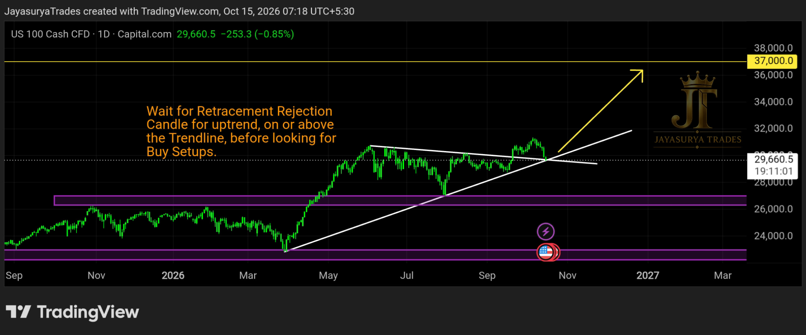

For this Thursday Market Focus, I am looking at NASDAQ 100 / US100. Price has already broken upward from a triangle trendline pattern. The current focus is the retracement toward the upper trendline and how price reacts there before deciding the next possible move.
Price is now at the upper trendline. I am waiting for a rejection candle at this area for confirmation. Although I currently expect the trend to continue upward if the trendline reaction supports that view, I will not act on that expectation before price confirms the next move.

Current Market Structure
The triangle has already broken upward, which supports a bullish scenario from a market-structure perspective. Price has now returned to the top trendline. The immediate question is whether this trendline acts as support during the retracement or whether price closes back below it.
A rejection candle at the upper trendline would provide the confirmation I am waiting for to assess whether the upward trend may continue. If a candle closes below the upper trendline, that could signal a possible downward move and would weaken the immediate bullish scenario.
Bullish confirmation → A rejection candle at the upper trendline
Bearish warning → A candle close below the upper trendline
Major downside support zone → 26,000–27,000 if the bottom trendline breaks with confirmation
Upper Trendline — The Immediate Decision Area
Price is currently at the top trendline after the upward triangle breakout. I am watching for a rejection candle to assess whether the trendline holds during this retracement. Until that reaction appears, the continuation scenario remains unconfirmed.
If a candle closes below the upper trendline, it may indicate a downward move. I will wait for the candle-close behaviour rather than treating a touch of the trendline alone as confirmation of either direction.
Bullish Scenario — Trendline Rejection and Continuation
If price retraces to the upper trendline and forms a rejection candle, the reaction could support the possibility of the upward trend continuing after the triangle breakout. This is the scenario I currently expect, but the rejection candle is the confirmation I am waiting for before drawing a conclusion.
If the retracement continues instead, price may reach the bottom trendline of the triangle. That lower trendline could act as support and potentially push price upward. The reaction at the bottom trendline will also need to be observed rather than assumed in advance.
Confirmation to Watch
A rejection candle at the upper trendline could support the immediate continuation scenario. If price moves toward the bottom trendline, its reaction there will help determine whether that area acts as support. Neither outcome should be assumed before the market confirms it.
Alternative Scenario — Trendline Breakdown
If price closes below the upper trendline, a downward move may develop. If the retracement reaches the bottom trendline, that trendline becomes another important decision area: it may act as support, or price may break below it.
A candle close below the bottom trendline would be the confirmation I am watching for a breakdown of the triangle's lower boundary. If that breakdown is confirmed, the next support zone noted in this analysis is 26,000–27,000. This remains a conditional downside scenario, not a prediction that the level will necessarily be reached.
What I Am Watching Now
Scenario 1 — Upper Trendline Rejection
If price forms a rejection candle at the upper trendline, the upward trend may continue. This is the scenario I currently favour, but I will wait for the rejection candle before treating it as confirmed.
Scenario 2 — Close Below the Upper Trendline
If a candle closes below the upper trendline, a downward move may develop. Price could then retrace toward the bottom trendline, where the market's reaction will help determine whether support holds or a further breakdown becomes possible.
Scenario 3 — Bottom Trendline Breakdown
If price closes below the bottom trendline, the bearish scenario gains confirmation. In that case, the next support zone I am watching is 26,000–27,000.
Key Takeaways
- NASDAQ 100 has already broken upward from a triangle trendline pattern.
- Price is currently testing the upper trendline after the breakout.
- A rejection candle at the upper trendline is the immediate bullish confirmation being watched.
- A candle close below the upper trendline may signal a possible downward move.
- The retracement may reach the bottom trendline, which could act as support and potentially push price upward.
- A candle close below the bottom trendline would confirm the breakdown scenario being watched.
- If the bottom trendline breaks with confirmation, the next support zone noted is 26,000–27,000.
- The current expectation is for a possible rejection and upward continuation, but confirmation is required before acting on that view.
Watch the upper trendline.
Wait for the rejection candle.
Let the market confirm the next move.
One day. One market. One focused analysis.
Levels. Structure. Scenarios. Confirmation.
No hype. Just how the market behaves.
Watch. Wait. Confirm. 👀
Risk Disclaimer
This analysis is provided for educational and informational purposes only and should not be considered financial advice or a recommendation to buy or sell any financial instrument.
Trading involves substantial risk. Always conduct your own research and follow your own trading plan and risk-management rules.